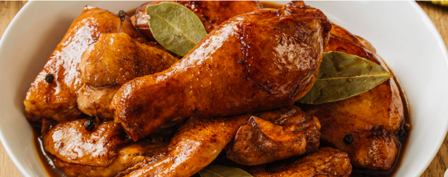

KARENderya ng mga PALamonin
Hate me to love me!
Adobong Manok Recipe
Adobo is a cooking method used in the Philippines. It involves braising protein in a liquid composed of vinegar, soy sauce, peppercorns, and garlic. This cooking method is a combination of Filipino and Chinese cultures. Filipino natives used to use vinegar and salt to preserve food in the tropical climate of the Philippines. When Chinese traders arrived, they brought with them their native ingredients like soy sauce, which took the place of salt in adobo.

Ingredients
- 2 tbsp canola oil
- 6 cloves garlic crushed
- 1 pc onion, sliced
- 1 kilogram chicken cut ups
- 2 tbsp vinegar
- 1/4 cup soy sauce
- 1 cup water
- 2 pcs bay leaves
- 1 tsp whole black peppercorns, slightly crushed
- 2 pc Knorr chicken cubes
- 1 tsp brown sugar packed
- Option: 1 cup kale or spinach
Steps how to
- Heat oil in pan and sauté garlic and onions. Then add chicken to the pan and sear on all sides, until you have a little browning in the chicken skin.
- Pour in vinegar, soy sauce and water. Add bay leaves, pepper and Knorr Chicken Cubes. Bring to a boil over high heat then reduce heat to simmer, but do not cover the pan. Continue to simmer for 10 mins.
- Remove chicken pieces from sauce and fry in another pan until nicely browned.
- Put back fried chicken pieces into sauce. Add sugar and let simmer again for another 10 minutes or until sauce has thickened. Serve warm.
Back to top